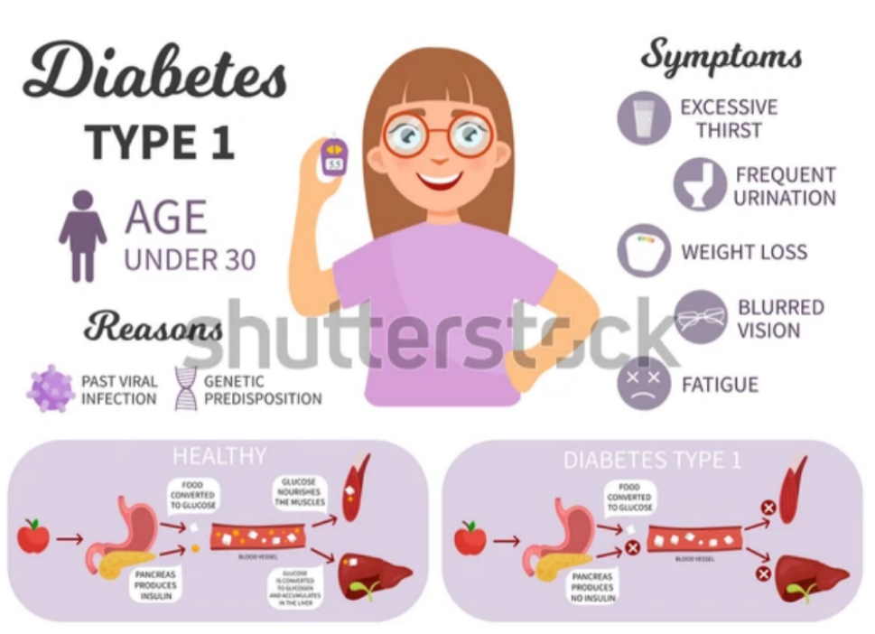
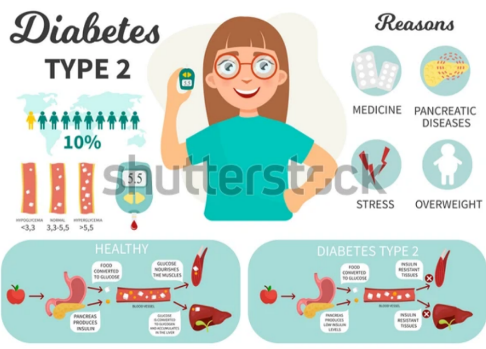

What is diabetes?
Glucose builds up in the blood leading to gyperglycemia.Diabetes affects the body’s ability to make or properly use insulin.
Main types of Diabetes
Type 1 diabetes happens when your body does not make insulin. This means you have to take insulin through shots or an insulin pump.

Type 2 diabetes happens when your body cannot use the insulin it makes or when your body does not make enough insulin. You may have to take insulin or another type of medicine to keep your blood sugar in a healthy range.

Symptom of diabetes
Signs of diabetes occur because the body lacks insulin. This causes blood sugar to build up in the blood, leading to these signs:
- Passing extra urine.
- Drinking a lot.
- Eating a lot.
- Feeling tired.
- Change in vision.
- Feeling weak.
- Nausea and vomiting.
What make blood sugar high?
Many, many factors- the ones we will discuss here are:
- Food with carbohydrates
- Illness
- Hormones
What is insulin?
- Insulin is a hormone made in the pancreas by the beta cells.
- When we eat food it turns to sugar in our blood.
- Insulin is needed to carry sugar from our bloodstream into our cells to be used as energy.